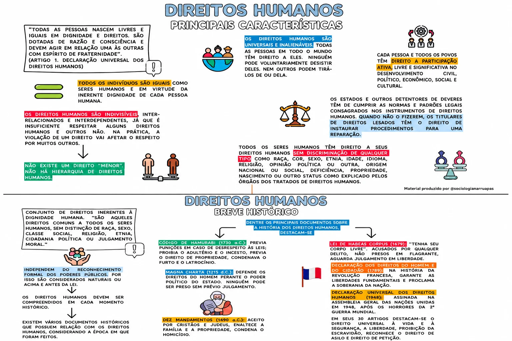

3º Bimestre – 2026
Aluno(a):
Matriz de Habilidades Essenciais: (GO-EMCHS605B) Analisar os princípios da Declaração Universal dos Direitos Humanos, identificando os progressos e entraves à concretização desses direitos para refletir sobre as desigualdades sociais no Mundo Contemporâneo.
Objeto de Conhecimento: Declaração Universal dos Direitos Humanos. Democracia, movimentos sociais e cidadania.
Colaboração: Prof.ª Marta Valeirano — CEPMG Mendes Paraíso — Aparecida de Goiânia.
O século XX vivenciou duas grandes Guerras Mundiais, conflitos que levaram a milhões de mortes e destruições sem antecedentes. O desenvolvimento de tecnologias foi tão intenso que, ao fim da Segunda Guerra Mundial — no ano de 1945 —, os países mais influentes viram a necessidade de criar um pacto global para a paz, para mitigar a possibilidade de uma Terceira Grande Guerra, a qual poderia acabar com a vida humana como a conhecemos.
Como resultado dessa convenção surgiu a Organização das Nações Unidas (ONU), em 1945, responsável pela Declaração Universal dos Direitos Humanos (DUDH), promulgada em 1948. Esse documento buscava e ainda busca garantir a "dignidade inerente a todos os membros da família humana e dos seus direitos iguais e inalienáveis, [cujo reconhecimento constitui] o fundamento da liberdade, da justiça e da paz no mundo" (ONU, 1948), com base nos direitos descritos em sua declaração oficial.
No Brasil, os Direitos Humanos são incluídos na Constituição Federal de 1988, também conhecida como "Constituição Cidadã", pois inclui em seu repertório conceitos básicos da ONU para a proteção dos direitos e a garantia da dignidade dos cidadãos.
Neste sentido, os Direitos Humanos, seja na DUDH ou na Legislação brasileira, têm a função de garantir a qualidade de vida básica para todos os cidadãos, independentemente de origem, gênero, raça, nacionalidade, religião, orientação sexual ou qualquer outra característica individual ou coletiva. Os direitos universais, portanto, se aplicam a todos os humanos, sem exceção.
Além de garantir a dignidade a todos os indivíduos, os Direitos Humanos visam assegurar a liberdade individual, promover a igualdade, combater a discriminação, garantir o acesso à justiça, preservar a paz e a segurança, proteger o meio ambiente e responsabilizar os governos. Dessa forma, eles promovem o desenvolvimento humano e, em especial, a proteção da cidadania, com ênfase nos segmentos prioritários.
Referência: Direitos Humanos em sala de aula: guia prático da ObservaDH. Acesso em: 2026.
Adotada e proclamada pela Assembleia Geral das Nações Unidas (resolução 217 A III) em 10 de dezembro de 1948.
Considerando que o reconhecimento da dignidade inerente a todos os membros da família humana e de seus direitos iguais e inalienáveis é o fundamento da liberdade, da justiça e da paz no mundo,
Considerando que o desprezo e o desrespeito pelos direitos humanos resultaram em atos bárbaros que ultrajaram a consciência da humanidade e que o advento de um mundo em que mulheres e homens gozem de liberdade de palavra, de crença e da liberdade de viverem a salvo do temor e da necessidade foi proclamado como a mais alta aspiração do ser humano comum,
Considerando ser essencial que os direitos humanos sejam protegidos pelo império da lei, para que o ser humano não seja compelido, como último recurso, à rebelião contra a tirania e a opressão,
Considerando ser essencial promover o desenvolvimento de relações amistosas entre as nações,
Considerando que os povos das Nações Unidas reafirmaram, na Carta, sua fé nos direitos fundamentais do ser humano, na dignidade e no valor da pessoa humana e na igualdade de direitos do homem e da mulher e que decidiram promover o progresso social e melhores condições de vida em uma liberdade mais ampla,
Considerando que os Países-Membros se comprometeram a promover, em cooperação com as Nações Unidas, o respeito universal aos direitos e liberdades fundamentais do ser humano e a observância desses direitos e liberdades,
Considerando que uma compreensão comum desses direitos e liberdades é da mais alta importância para o pleno cumprimento desse compromisso,
Agora, portanto, a Assembleia Geral proclama a presente Declaração Universal dos Direitos Humanos como o ideal comum a ser atingido por todos os povos e todas as nações, com o objetivo de que cada indivíduo e cada órgão da sociedade, tendo sempre em mente esta Declaração, esforce-se, por meio do ensino e da educação, por promover o respeito a esses direitos e liberdades, e, pela adoção de medidas progressivas de caráter nacional e internacional, por assegurar o seu reconhecimento e a sua observância universais e efetivos, tanto entre os povos dos próprios Países-Membros quanto entre os povos dos territórios sob sua jurisdição.
Todos os seres humanos nascem livres e iguais em dignidade e direitos. São dotados de razão e consciência e devem agir em relação uns aos outros com espírito de fraternidade.
1. Todo ser humano tem capacidade para gozar os direitos e as liberdades estabelecidos nesta Declaração, sem distinção de qualquer espécie, seja de raça, cor, sexo, língua, religião, opinião política ou de outra natureza, origem nacional ou social, riqueza, nascimento, ou qualquer outra condição.
2. Não será também feita nenhuma distinção fundada na condição política, jurídica ou internacional do país ou território a que pertença uma pessoa, quer se trate de um território independente, sob tutela, sem governo próprio, quer sujeito a qualquer outra limitação de soberania.
Todo ser humano tem direito à vida, à liberdade e à segurança pessoal.
Ninguém será mantido em escravidão ou servidão; a escravidão e o tráfico de escravos serão proibidos em todas as suas formas.
Ninguém será submetido à tortura, nem a tratamento ou castigo cruel, desumano ou degradante.
Todo ser humano tem o direito de ser, em todos os lugares, reconhecido como pessoa perante a lei.
Todos são iguais perante a lei e têm direito, sem qualquer distinção, a igual proteção da lei. Todos têm direito a igual proteção contra qualquer discriminação que viole a presente Declaração e contra qualquer incitamento a tal discriminação.
Todo ser humano tem direito a receber dos tribunais nacionais competentes remédio efetivo para os atos que violem os direitos fundamentais que lhe sejam reconhecidos pela constituição ou pela lei.
Ninguém será arbitrariamente preso, detido ou exilado.
Todo ser humano tem direito, em plena igualdade, a uma justa e pública audiência por parte de um tribunal independente e imparcial, para decidir seus direitos e deveres ou fundamento de qualquer acusação criminal contra ele.
1. Todo ser humano acusado de um ato delituoso tem o direito de ser presumido inocente até que a sua culpabilidade tenha sido provada de acordo com a lei, em julgamento público no qual lhe tenham sido asseguradas todas as garantias necessárias à sua defesa.
2. Ninguém poderá ser culpado por qualquer ação ou omissão que, no momento, não constituíam delito perante o direito nacional ou internacional. Também não será imposta pena mais forte do que aquela que, no momento da prática, era aplicável ao ato delituoso.
Ninguém será sujeito a interferência na sua vida privada, na sua família, no seu lar ou na sua correspondência, nem a ataques à sua honra e reputação. Todo ser humano tem direito à proteção da lei contra tais interferências ou ataques.
1. Todo ser humano tem direito à liberdade de locomoção e residência dentro das fronteiras de cada Estado.
2. Todo ser humano tem o direito de deixar qualquer país, inclusive o próprio, e a esse regressar.
1. Todo ser humano, vítima de perseguição, tem o direito de procurar e de gozar asilo em outros países.
2. Esse direito não pode ser invocado em caso de perseguição legitimamente motivada por crimes de direito comum ou por atos contrários aos objetivos e princípios das Nações Unidas.
1. Todo ser humano tem direito a uma nacionalidade.
2. Ninguém será arbitrariamente privado de sua nacionalidade, nem do direito de mudar de nacionalidade.
1. Os homens e mulheres de maior idade, sem qualquer restrição de raça, nacionalidade ou religião, têm o direito de contrair matrimônio e fundar uma família. Gozam de iguais direitos em relação ao casamento, sua duração e sua dissolução.
2. O casamento não será válido senão com o livre e pleno consentimento dos nubentes.
3. A família é o núcleo natural e fundamental da sociedade e tem direito à proteção da sociedade e do Estado.
1. Todo ser humano tem direito à propriedade, só ou em sociedade com outros.
2. Ninguém será arbitrariamente privado de sua propriedade.
Todo ser humano tem direito à liberdade de pensamento, consciência e religião; esse direito inclui a liberdade de mudar de religião ou crença e a liberdade de manifestar essa religião ou crença pelo ensino, pela prática, pelo culto em público ou em particular.
Todo ser humano tem direito à liberdade de opinião e expressão; esse direito inclui a liberdade de, sem interferência, ter opiniões e de procurar, receber e transmitir informações e ideias por quaisquer meios e independentemente de fronteiras.
1. Todo ser humano tem direito à liberdade de reunião e associação pacífica.
2. Ninguém pode ser obrigado a fazer parte de uma associação.
1. Todo ser humano tem o direito de tomar parte no governo de seu país, diretamente ou por intermédio de representantes livremente escolhidos.
2. Todo ser humano tem igual direito de acesso ao serviço público do seu país.
3. A vontade do povo será a base da autoridade do governo; essa vontade será expressa em eleições periódicas e legítimas, por sufrágio universal, por voto secreto ou processo equivalente que assegure a liberdade de voto.
Todo ser humano, como membro da sociedade, tem direito à segurança social, à realização, pelo esforço nacional, pela cooperação internacional e de acordo com a organização e recursos de cada Estado, dos direitos econômicos, sociais e culturais indispensáveis à sua dignidade e ao livre desenvolvimento da sua personalidade.
1. Todo ser humano tem direito ao trabalho, à livre escolha de emprego, a condições justas e favoráveis de trabalho e à proteção contra o desemprego.
2. Todo ser humano, sem qualquer distinção, tem direito a igual remuneração por igual trabalho.
3. Todo ser humano que trabalha tem direito a uma remuneração justa e satisfatória que lhe assegure, assim como à sua família, uma existência compatível com a dignidade humana e a que se acrescentarão, se necessário, outros meios de proteção social.
4. Todo ser humano tem direito a organizar sindicatos e a neles ingressar para proteção de seus interesses.
Todo ser humano tem direito a repouso e lazer, inclusive a limitação razoável das horas de trabalho e a férias remuneradas periódicas.
1. Todo ser humano tem direito a um padrão de vida capaz de assegurar a si e a sua família saúde, bem-estar, inclusive alimentação, vestuário, habitação, cuidados médicos e os serviços sociais indispensáveis e direito à segurança em caso de desemprego, doença, invalidez, viuvez, velhice ou outros casos de perda dos meios de subsistência em circunstâncias fora de seu controle.
2. A maternidade e a infância têm direito a cuidados e assistência especiais. Todas as crianças, nascidas dentro ou fora do matrimônio, gozarão da mesma proteção social.
1. Todo ser humano tem direito à instrução. A instrução será gratuita, pelo menos nos graus elementares e fundamentais. A instrução elementar será obrigatória. A instrução técnico-profissional será acessível a todos, bem como a instrução superior, esta baseada no mérito.
2. A instrução será orientada no sentido do pleno desenvolvimento da personalidade humana e do fortalecimento do respeito pelos direitos do ser humano e pelas liberdades fundamentais. A instrução promoverá a compreensão, a tolerância e a amizade entre todas as nações e grupos raciais ou religiosos e coadjuvará as atividades das Nações Unidas em prol da manutenção da paz.
3. Os pais têm prioridade de direito na escolha do gênero de instrução que será ministrada a seus filhos.
1. Todo ser humano tem o direito de participar livremente da vida cultural da comunidade, de fruir as artes e de participar do progresso científico e de seus benefícios.
2. Todo ser humano tem direito à proteção dos interesses morais e materiais decorrentes de qualquer produção científica, literária ou artística da qual seja autor.
Todo ser humano tem direito a uma ordem social e internacional em que os direitos e liberdades estabelecidos na presente Declaração possam ser plenamente realizados.
1. Todo ser humano tem deveres para com a comunidade, na qual o livre e pleno desenvolvimento de sua personalidade é possível.
2. No exercício de seus direitos e liberdades, todo ser humano estará sujeito apenas às limitações determinadas pela lei, exclusivamente com o fim de assegurar o devido reconhecimento e respeito dos direitos e liberdades de outrem e de satisfazer as justas exigências da moral, da ordem pública e do bem-estar de uma sociedade democrática.
3. Esses direitos e liberdades não podem, em hipótese alguma, ser exercidos contrariamente aos objetivos e princípios das Nações Unidas.
Nenhuma disposição da presente Declaração pode ser interpretada como o reconhecimento a qualquer Estado, grupo ou pessoa, do direito de exercer qualquer atividade ou praticar qualquer ato destinado à destruição de quaisquer dos direitos e liberdades aqui estabelecidos.
Princípios destacados no mapa mental:
A DUDH foi assinada na Assembleia Geral das Nações Unidas em 1948, após os horrores da 2ª Guerra Mundial, e em seus 30 artigos destacam-se o direito à vida, à liberdade, à segurança, a proibição da escravidão e o direito de asilo político, entre outros. Existem vários documentos históricos que possuem relação com os Direitos Humanos, considerando a época em que foram escritos: o Código de Hamurabi previa punições em caso de desrespeito às leis, proibia o adultério e o incesto, previa o direito de propriedade e condenava o furto e o latrocínio; a Magna Carta defende os direitos do homem perante o poder político do Estado, estabelecendo que ninguém pode ser preso sem prévio julgamento; o habeas corpus garante que os acusados por qualquer delito, não presos em flagrante, aguardem julgamento em liberdade. Os Direitos Humanos devem ser compreendidos em cada momento histórico.
Material produzido por @sociologianarruapas.

Direitos Humanos: principais características e breve histórico. Material produzido por @sociologianarruapas. Toque na imagem para ampliar.
Trabalhar a Declaração Universal dos Direitos Humanos (DUDH) de 1948 em sala de aula exige do professor de Sociologia ultrapassar a mera leitura jurídica do documento. Sob a ótica sociológica, os Direitos Humanos não devem ser apresentados como concessões estáticas ou consensos naturais, mas sim como um campo de disputas históricas e políticas intensas.
A essência da habilidade GO-EMCHS605B reside em capacitar o estudante a enxergar a constante tensão entre o plano normativo (aquilo que a lei assegura no papel) e o plano real (as condições concretas de existência das populações). Enquanto a DUDH desenha um horizonte ético de igualdade e dignidade, a estrutura social e econômica contemporânea impõe barreiras que impedem a universalização dessas garantias.
Para apoiar sua mediação didática, este texto está estruturado em três grandes eixos que fundamentam a habilidade: os entraves gerados pelas desigualdades, os progressos viabilizados pelo Estado e o papel dos movimentos sociais.
O Artigo 25º da DUDH assegura que todo ser humano tem direito a um padrão de vida capaz de garantir saúde, bem-estar, alimentação, vestuário, habitação e serviços sociais básicos. No entanto, ao confrontar esse princípio com a realidade urbana e social do século XXI, deparamo-nos com um descompasso estrutural.
No capitalismo contemporâneo, a desigualdade socioeconômica atua como o principal entrave à concretização dos direitos. Ocorre um processo de mercantilização dos direitos sociais: quando o acesso à moradia digna, à alimentação de qualidade e aos cuidados médicos de ponta passa a depender da capacidade financeira do indivíduo, esses elementos deixam de funcionar como direitos universais e passam a operar como privilégios de consumo.
Discuta com os estudantes como a vulnerabilidade social e a segregação urbana privam indivíduos das garantias básicas.
Problematize a noção de "viver nesse mundo" idealizado pela legislação. Mostre que a exclusão social não é um fenômeno natural ou fruto do "fracasso individual", mas o resultado de uma distribuição desigual de recursos e oportunidades estruturais.
Se as desigualdades estruturais representam o entrave, as ações do Estado constituem a principal ferramenta de progresso e mediação. O Artigo 26º da DUDH estabelece o direito universal à instrução e à educação gratuita nos graus fundamentais. Na prática contemporânea, contudo, a garantia de que crianças e jovens vulneráveis permaneçam na escola exige mais do que a simples existência de salas de aula: exige a remoção de barreiras socioeconômicas.
Historicamente, os maiores saltos nos índices de desenvolvimento humano (como o IDH) ocorrem quando o Estado assume um papel ativo na redistribuição de renda e na assistência social. Programas de transferência de renda que envolvem condicionalidades — como a exigência de frequência escolar e vacinação em dia — exemplificam como a política pública atua diretamente no combate à evasão escolar e na quebra do ciclo intergeracional da pobreza.
Demonstre que os avanços nos indicadores sociais (como a elevação do IDH) não ocorrem por forças espontâneas de mercado ou por mera filantropia privada.
Ajude o estudante a associar que a efetivação das garantias descritas na DUDH depende diretamente da robustez de políticas sociais e institucionais promovidas pelo Estado para acolher populações historicamente marginalizadas.
Os Direitos Humanos não nascem de gabinetes jurídicos; eles são conquistados nas ruas, por meio de conflitos e pressões sociais. A história demonstra que os maiores avanços contra a violência institucional e a discriminação sistêmica são frutos diretos da ação coletiva e organizada da sociedade civil.
O Artigo 5º da DUDH afirma que ninguém será submetido à tortura ou a tratamentos cruéis, desumanos ou degradantes. Apesar disso, ao longo do século XX, o Estado brasileiro validou modelos de confinamento violento de populações marginalizadas, negros, homossexuais e pessoas sem diagnóstico mental em manicômios higienistas (como o trágico caso do Hospital de Barbacena). A desconstrução desse modelo desumano só foi viabilizada pela mobilização da sociedade civil no movimento da Reforma Psiquiátrica, que lutou para substituir o isolamento por tratamentos comunitários e humanizados, consolidando na prática o respeito à dignidade humana contido no Artigo 5º.
Da mesma forma, as garantias de não discriminação expressas no Artigo 2º da DUDH só avançaram devido à mobilização de movimentos de minorias políticas. Eventos históricos de resistência à violência policial e institucional — como as revoltas de Stonewall em 1969 — lançaram as bases para que movimentos organizados em torno da diversidade pudessem pautar o debate político global. A atuação desses movimentos visa combater o preconceito estrutural, mobilizar as instituições democráticas e garantir que o Estado formule leis protetivas e inclusivas para todos.
Enfatize que a democracia não se resume ao ato de votar, mas se realiza na participação ativa da sociedade civil por meio dos movimentos sociais.
Explique aos alunos que o objetivo central desses movimentos não é enfraquecer o Estado ou criar "privilégios para grupos específicos", mas sim exigir que o Estado cumpra sua promessa constitucional e internacional de garantir direitos iguais e proteção contra a discriminação e a violência.
Para Solon Eduardo Annes Viola, a grande contribuição desses movimentos para a sociedade brasileira tem sido a formação de uma nova cultura que se manifesta em novas formas de organização social e de participação política.
Segundo Viola, este autoritarismo é um dos mitos fundadores de nossa cultura política. "Faz parte da herança colonial do latifúndio exportador. Reduziu seres humanos à condição de instrumentos de trabalho."
IHU On-Line — No livro Direitos humanos e democracia no Brasil, você fala em velhas questões não resolvidas pelo capitalismo. Que questões seriam estas e no que isto implica na sociedade atual?
Solon Viola — No livro Pelas mãos de Alice, Boaventura Souza Santos argumenta que o capitalismo construiu promessas que não poderia cumprir. A distribuição de riquezas na sociedade globalizada dá razão ao sociólogo português. Na medida em que não pode, por exemplo, concretizar o pressuposto da igualdade, um dos fundamentos dos direitos humanos da modernidade, o capitalismo ampliou a desigualdade, criando concentração de possibilidades e universalizando um quadro de dificuldades que envolve a maioria da população do planeta.
IHU On-Line — Qual é a importância da luta dos movimentos sociais para a redemocratização do país? A atual estrutura socioeconômica favorece esta luta?
Solon Viola — Os movimentos sociais, especialmente aqueles ligados aos direitos humanos, cumpriram um papel primordial na redemocratização política, desde as primeiras resistências ao estado autoritário no combate às violações da privacidade e da cidadania. Posteriormente, lutaram pela anistia de exilados e perseguidos políticos, em defesa da livre manifestação de pensamento, pelas eleições diretas e pela constituinte soberana. Ao longo do período de abertura política, produziram um universo intenso de lutas contra a carestia, em defesa da reforma agrária e de moradia digna. Estas últimas não estão resolvidas e se fazem presentes na atual estrutura, mesmo que esta não favoreça a ação mais efetiva dos movimentos sociais.
IHU On-Line — Por que você acredita que os direitos humanos dependem mais da luta dos movimentos sociais do que da sua garantia por força da Lei?
Solon Viola — Os direitos civis e políticos foram conquistas do movimento social em luta contra o autoritarismo militar. A Declaração Universal dos Direitos Humanos da ONU, que completa 60 anos em dezembro, proclama princípios que a Constituição Cidadã incorporou, notadamente aqueles que dizem respeito aos direitos sociais e econômicos. No entanto, tais direitos não são efetivados para a maioria da população brasileira. Mesmo que algumas medidas tenham amenizado nossas desigualdades sociais, ela permanece presente e diminui a eficácia de nossos direitos civis e políticos. O reconhecimento pela legislação se mostra, portanto, insuficiente para alterar uma herança de mais de quatro séculos de injustiça. Como no processo de redemocratização, a justiça social deverá ser uma exigência da sociedade como um todo. Talvez como uma forma de alcançar a paz interna.
IHU On-Line — Qual a sua visão sobre a crise da democracia e o autoritarismo no Brasil? É possível acreditar que os princípios de igualdade e liberdade, uma das bandeiras dos movimentos sociais, serão conquistados?
Solon Viola — O autoritarismo é um dos mitos fundadores de nossa cultura política. Faz parte da herança colonial e do latifúndio exportador. Reduziu seres humanos à condição de instrumentos de trabalho. Não se reduz à ação do Estado, ou mesmo de governo. Está enraizado nas relações sociais e suas práticas de dominação. Elimina a liberdade e impede a igualdade. Os movimentos sociais procuram construir uma nova cultura orientada para a superação das desigualdades e para a consolidação das liberdades. A redemocratização insere-se como uma conquista dos movimentos. A manutenção da violência, tanto por parte do Estado como no interior da própria sociedade, é um dos tantos limites para a realização dos direitos humanos e da consolidação do processo democrático. Ou, como afirmava Perez Aguirre, os direitos humanos, nas sociedades contemporâneas, têm sempre a dupla função de ser, ao mesmo tempo, crítica e utopia frente à realidade social.
IHU On-Line — A consolidação dos movimentos sociais tem origem na Ditadura Militar. Como você percebe a trajetória destes movimentos desde então e o que você destacaria como conquistas para a sociedade? Podemos classificar os movimentos sociais entre novos e velhos? Se sim, qual é o diferencial entre eles?
Solon Viola — Alain Touraine chama de "velhos" os movimentos sociais típicos da segunda metade do século XIX e das três primeiras décadas do século XX. Foram movimentos organizados pelos trabalhadores industriais que englobaram desde as lutas por direitos sociais e econômicos até modelos distintos de organização social. O mesmo autor chama de "novos" movimentos sociais aqueles nascidos na segunda metade do século passado. Movimentos que se caracterizaram para além dos clássicos conflitos pelo controle do Estado. Entre eles os movimentos feministas, os movimentos ambientalistas e aqueles relacionados à defesa dos direitos humanos. No caso do Brasil, os chamados "novos" movimentos sociais se constituíram no vazio de representação sociopolítica decorrente da intensa repressão exercida contra os setores organizados da população após o golpe de estado e, especialmente, após a decretação do AI-5 em 1968. A grande contribuição desses movimentos para a sociedade brasileira tem sido a formação de uma nova cultura que se manifesta em novas formas de organização social e de participação política.
IHU On-Line — Como você avalia a relação da mídia com os movimentos sociais na luta pelos direitos humanos?
Solon Viola — Felizmente, não existe só uma mídia. A chamada grande mídia, os grandes jornais, as principais revistas de circulação nacional e a mídia eletrônica seguem uma linha editorial muito igual. Procuram, permanentemente, criminalizar os movimentos sociais e constroem uma visão preconcebida a respeito dos direitos humanos. O tom de suas coberturas segue uma linha, herdada do período militar, de preconceitos simbolizados na antiga expressão de que os direitos humanos servem para defender bandidos. No tempo da ditadura, a acusação era de defesa de subversivos e terroristas. Se, por outro lado, analisarmos mídias alternativas, veremos uma outra leitura dos direitos humanos, aquela que diz respeito à sua divulgação e aquela que se coloca, de forma efetiva, em sua defesa.
Entrevista com Solon Eduardo Annes Viola — IHU On-Line.
A Declaração Universal dos Direitos Humanos, adotada e proclamada pela Assembleia Geral da ONU na Resolução 217-A, de 10 de dezembro de 1948, foi um acontecimento histórico de grande relevância. Ao afirmar, pela primeira vez em escala planetária, o papel dos direitos humanos na convivência coletiva, pode ser considerada um evento inaugural de uma nova concepção de vida internacional.
LAFER, C. Declaração Universal dos Direitos Humanos (1948). In: MAGNOLI, D. (Org.). História da paz. São Paulo: Contexto, 2008.
A declaração citada no texto introduziu uma nova concepção nas relações internacionais ao possibilitar a
O Artigo 25º da Declaração Universal dos Direitos Humanos (DUDH) prevê que toda pessoa tem direito a um padrão de vida que assegure a si e a seus dependentes a saúde e o bem-estar. No entanto, nas periferias urbanas contemporâneas, o acesso a alimentos saudáveis e ao saneamento básico é limitado pela renda familiar. A sociologia aponta que, sob a lógica do mercado, bens vitais de sobrevivência são transformados em mercadorias.
a) Explique a diferença entre a perspectiva normativa (a lei escrita) e a realidade social na aplicação do Artigo 25º da DUDH.
b) Como a desigualdade socioeconômica atua como um entrave para que esses direitos se tornem universais?